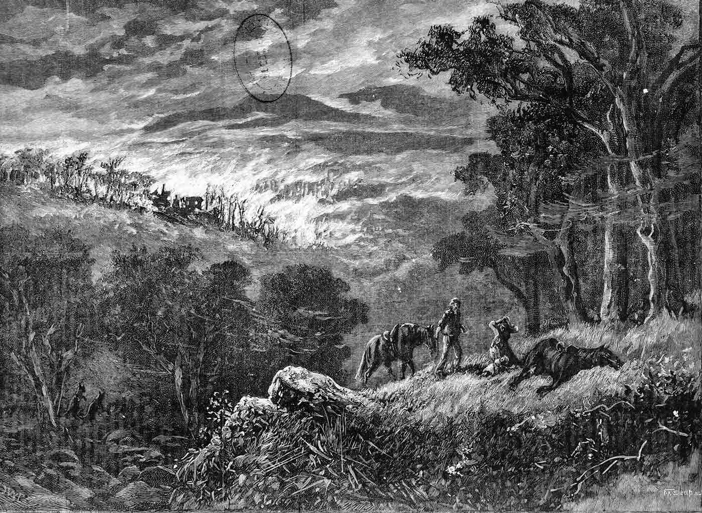
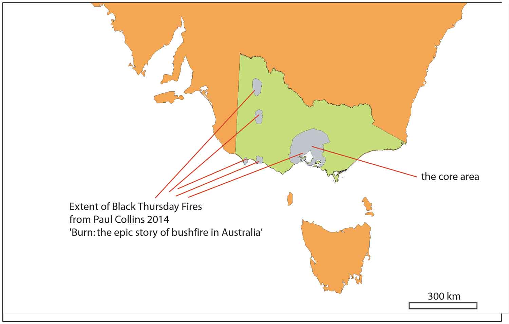
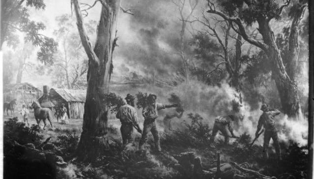

Black Thursday Firestorm
The year 1850 had been one of exceptional heat and drought.It was 110 degrees Fahrenheit (43.3 degrees Celsius) in the shadePastures had withered; creeks had become fissured clay-pans; water-holes had disappeared; sheep and cattle had perished in great numbers, and the sun-burnt plains were strewn with their bleached skeletons; the very leaves upon the trees crackled in the heat, and appeared to be as inflammable as tinder
As the summer advanced, the temperature became torrid, and on the morning of the 6th of February, 1851, the air which blew down from the north resembled the breath of a furnace. A fierce wind arose, gathering strength and velocity from hour to hour, until about noon it blew with the violence of a tornado.
The dark and lurid sky reminded Boldrewood of the destruction of Pompeii, while others (he claimed) thought it was the end of the world. Most dangerous was the speed with which ‘the flame-wave rolled in over grass and forest from the north’.
Farm houses, fences, crops, orchards, gardens, haystacks, bridges, wool-sheds, were swept away by the impetuous on-rush of the flames, which left behind them nothing but a charred heap of ruins, and a scene of pitiable desolation. The human fugitives fled to water, wherever it could be found, and stood in it, breathing with difficulty the suffocating atmosphere, and listening with awe to the roar of the elements and the cries of the affrighted animals.
In total, about five million hectares burnt, a quarter of Victoria. On the same day, much of western Tasmania, only recently settled by Europeans, was also burnt
The areas affected include Portland, Plenty Ranges, Westernport, the Wimmera and Dandenong districts. Approximately 12 lives, one million sheep and thousands of cattle were lost
Some who had lost their houses managed to survive in the bush or in creeks. And at Westernport a schoolhouse with 19 children and a teacher inside was saved at considerable risk.
One of the inquests was particularly melancholy: the station of a stockholder named M'Lelland was completely destroyed on the 6th, and close to his house perished his wife and five children, while he himself was so fearfully burnt in trying to save one of the children that his recovery was very doubtful
In the hills west of Geelong, a man helping fight a fire disappeared. His body was later found ‘burnt to a cinder’. Another man who perished was with a group burning stubble to form a firebreak when they were caught out by a wind change. His companions scattered, but he went the wrong way.
The Melbourne Argus callously noted that ‘pigs and dogs running loose were burned to death – birds were dropping down off the trees before the fire in all directions – oppossums, kangaroos, and all sorts of beasts can be had to-day ready roasted all over the bush’.
Black Thursday, February, 1851
by FA Sleap (engraver)
Illustrated Australian News, 1 August 1888
State Library of Victoria

Grey areas indicate the (likely minimum) extent of the 1851 Black Thursday Fires
based on Paul Collins (2914) ‘Burn: the epic story of bushfire in Australia’.
The green area is the current state of Victoria

Study of bushfire homestead Turner
Turner
Painting
1926
❮
❯

{kind=link}
{kind=link}
{kind=link}